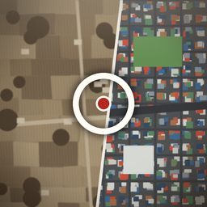

空から昭和
実家、祖父母の家、通った学校。国土地理院が撮影した昔の航空写真で、その場所の昭和をのぞけます。昭和から今まで、家に向かってゆっくり近づいていく縦長の動画にして、家族に送ることもできます。
使い方
- 「場所をえらぶ」で、住所や学校名を検索するか、地図を動かして十字を家の上に合わせます。
- 「この場所の昔を見る」を押すと、その場所に写っている年代の航空写真を探します。
- 年代のボタンで写真を切り替えられます。「いまとくらべる」では、境目の線を左右に動かして昔と今を見くらべられます。
- 「動画をつくる」で、すべての年代が移り変わる約30秒の動画ができます。写真アプリへの保存や、LINEなどで送ることができます。
ホーム左上の「家族の年表」に生まれた年を入れておくと、動画の各年代に「父 10歳 母 7歳」のような字幕が入ります。場所の追加（2か所目から）、家族の字幕、動画の上の文字を消す機能は、アプリ内の「すべての機能を解放」で使えるようになります。
写っている年代
- 昭和3年ごろ（1928年）：大阪市域のみ
- 昭和10年代（1936〜1942年）：東京23区と大阪市周辺のみ
- 昭和20年代（1945〜1950年、米軍撮影）：主に都市部
- 昭和30〜40年代（1961〜1969年）：多くの地域
- 昭和50年ごろ（1974〜1978年）：全国
- 昭和55年ごろ・昭和60年ごろ・昭和から平成へ（1979〜1990年）：主に都市部
- 令和のいま：全国
写っている年代や範囲は場所によって違います。写真の撮影時期には幅があり、場所によっては写真の端がずれたり、写っていない部分があったりします。
よくある質問
写真が表示されません
航空写真はその都度インターネットから読み込んでいます。電波のよいところで、もう一度開いてください。
年代が少ない場所があります
国土地理院が公開している写真の範囲によります。昭和50年ごろの写真は全国にありますが、それより前や後の写真は地域によってありません。
家の場所が少しずれています
場所を削除して、地図を大きく拡大してから十字を合わせ直してください。
購入した機能が使えません
設定の「購入を復元」を押してください。購入したときと同じApple IDでサインインしている必要があります。
お問い合わせ
出典
航空写真：国土地理院撮影の空中写真、全国最新写真（地理院タイル）。アプリでは写真をつなぎ合わせ、文字を重ねるなどの加工をしています。このアプリは国土地理院が作成・提供しているものではありません。
プライバシーポリシー
位置情報
地図の現在地ボタンを押したときだけ、今いる場所を地図に表示するために使います。位置を開発者に送信することはありません。
保存する情報
保存した場所・家族のよび名と生まれた年・作った動画は、端末の中だけに保存されます。開発者が受け取ることはありません。
外部への通信
航空写真を表示するために、地図タイルの番号を国土地理院のサーバーに送って画像を受け取ります。場所の検索と住所の表示には、Appleの地図サービスを使います。
写真アプリへの保存
作った動画を写真アプリに保存するときだけ、写真への追加の許可を使います。写真ライブラリの中身を読み取ることはありません。
広告・解析
広告や利用状況の解析ツールは使っていません。
お問い合わせ
このポリシーについてのお問い合わせは tajimaru1209@gmail.com までお願いします。